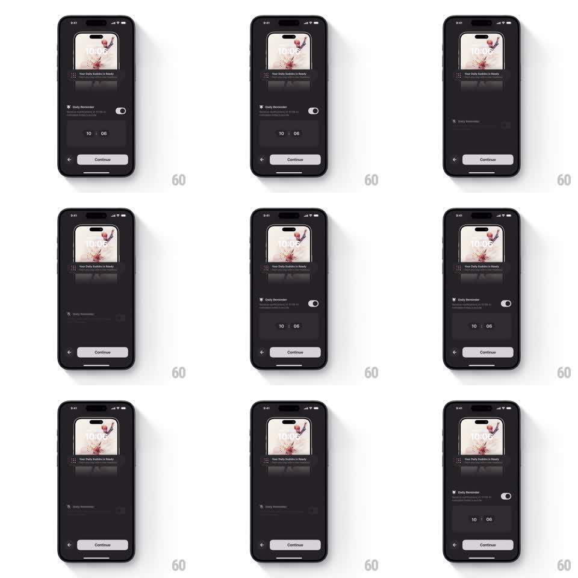

Media
Frame-by-frame

Rebuild this interaction 1:1: Sudoku a Day's reminder toggle - flipping the Daily Reminder switch smoothly expands or collapses the time-picker section beneath it while the Continue button rides along.

Rebuild this interaction 1:1: Sudoku a Day's reminder toggle - flipping the Daily Reminder switch smoothly expands or collapses the time-picker section beneath it while the Continue button rides along.
## Integration
Integration: stack-agnostic spec - springs given as stiffness/damping, timed motions as duration + curve; map every value to your framework and animation library of choice.
## Scene
Dark screen. Top: lock-screen preview card with "Your Daily Sudoku is Ready" notification. Middle: "Daily Reminder" label with subtext and an iOS-style toggle. Below it the time-picker card ("10 : 06" wheels). Bottom: back chevron and white Continue button.
## Motion spec
Pattern: toggle-driven expand/collapse of an inline section.
- The toggle flips with the standard spring (~500/30, 160ms travel), thumb sliding and track tinting on.
- Toggling ON: the picker card expands from zero height (spring ~340/28, no bounce), its contents fading in over the first 60% of the expansion (200ms); the Continue button and everything below slide down in the same motion.
- Toggling OFF: contents fade out fast (120ms) while the card collapses (spring ~340/30) and the lower content slides up to fill the gap.
- The preview card and reminder row stay fixed; only the picker region and everything below it move.
## Calibration
- Expansion is a height animation, not a scale: the picker's contents never squash.
- One continuous motion - no two-stage slide-then-fade.
## Reduced motion
Picker section fades in/out (200ms) without height travel.
## Don't miss
- The collapsed state removes the picker entirely - the Continue button sits directly under the reminder row.
- The remembered time (10:06) persists across toggles; it does not reset.